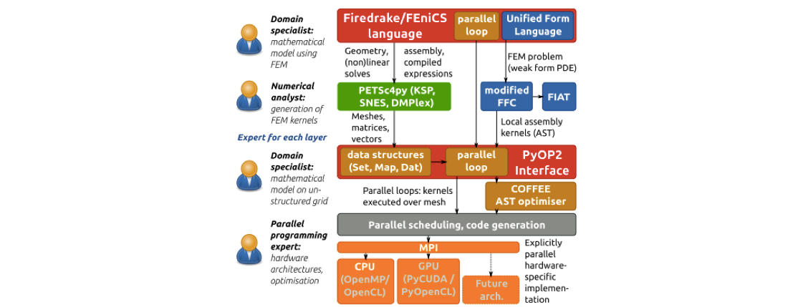
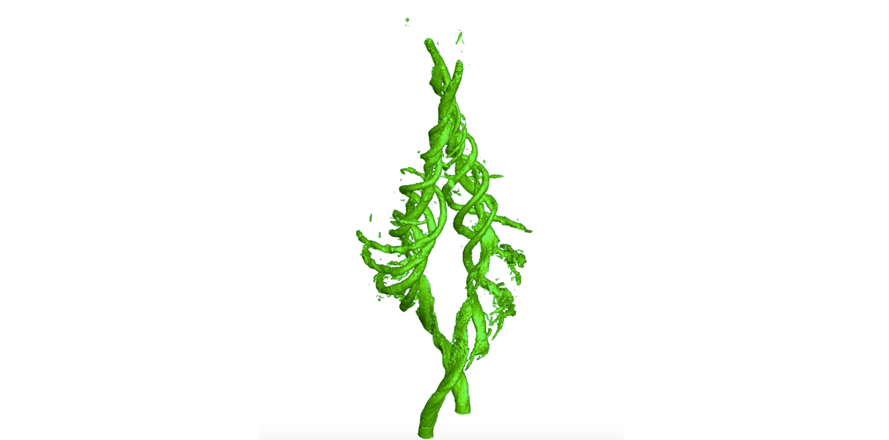
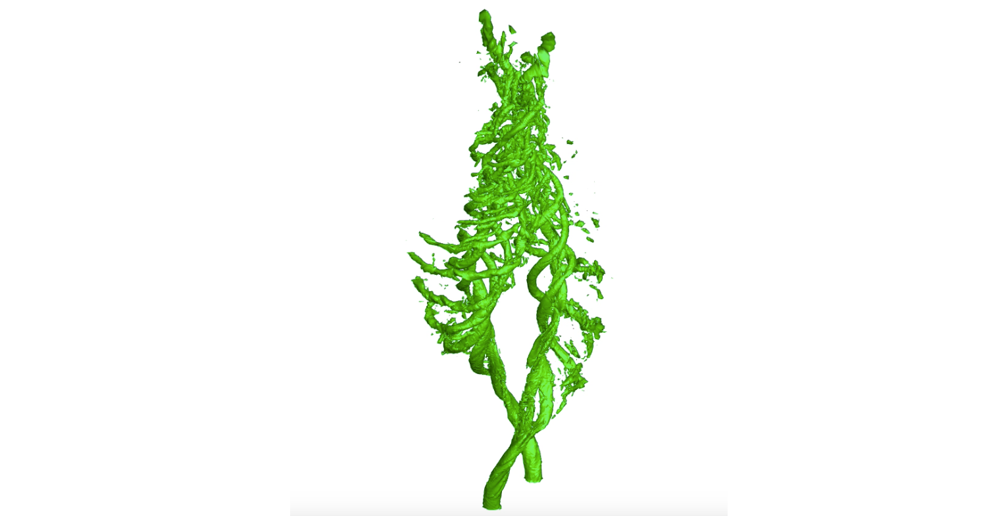

The Mission
Born out of more than 20 years of industrial experience, LCS-FAST has been conceived to provide a suite of effective CFD tools for solving your aerodynamic and fluid technical challenges. Based on our experience of working in high-demand and time critical engineering missions, LCS-FAST will reflect our passion for robustness, consistency and accuracy in the results. This will be built on the solid foundation of a slick and reliable CFD process from CAD to results, exploiting automation at every opportunity to minimise valauble engineering time.
LCS-FAST will deliver the latest advances in numerical modelling, computer science and high performance computing techniques as disruptive and production ready software for CFD led aerodynamic design, by bringing together decades of academic research and cutting edge software technologies into a game-changing solver. We will achieve this by building on a responsive code base that can rapidly adapt to changes in computer hardware to exploit efficient calculation for a faster response time. This explains our nomenclature LCS-FAST, which is conceived from its inception to be extremely quick.
The Implementation
Our director David Ham is a world leader in code automation techniques for the portable solution of partial differential equations using the finite element method (FEM). The enables developers to employ a wide range of discretisations to an infinite variety of PDEs and employ either conventional CPUs or GPUs to obtain the solution. Most especially it provides a structure for domain specialists such as a parallel programming expert and a numerical analyst to develop independently in their area of expertise without disrupting each other, greatly accelerating the pace of code development. LCS-FAST will exploit this technology to provide the ideal environment for developing code in an environment of rapidly changing hardware technology.
As well as exploiting code generation techniques, we will deploy highly parallel mesh generation methodology, and adaptive mesh techniques to provide the flexibility and robustness to deliver a range of modelling and accuracy to suit your engineering demands. This will provide everything from laminar flow, turbulence modelling (with and without wall functions), transient techniques including DES, LES and DNS and complex physics, such as multi-phase flow, with only one goal in mind - delivering the very best CFD simulation tool for solving your complex engineering challenges.
The goal
London Computational Solutions are developing the FAST CFD suite specifically to deliver a toolset to solve our client's engineering problems in the most effective manner possible exploiting the latest software and hardware technologies. The driver is your fluid mechanics application, where our passion for solving technical challenges is paramount. Here is an example of the technical challenges we want to tackle. The image above shows a pair of co-rotating vortices in a low noise environment. The vortices rotate elegantly before starting to merge at the top. This result is representative of what we typically see in low noise environments like a wind tunnel.
Now we introduce noise into the environment and observe the emergence of a pronounced mode wrapping itself around the main vortex in each case. This study was undertaken to explore differences in aerodynamic behaviour observed in a wind tunnel and at a race track. Unfortunately a race track is not an idealised environment with wind, turbulent wakes from other cars, atmospheric boundary layers and sudden changes in wind direction created by grand stands and other obstacles. This means that aerodynamic structures are exposed to very different conditions in the real world when compared with the idealised prototyping environment like a wind tunnel.
Here we show the vortices a little later in time where the modes energised by the addition of the noise start to breakdown and contaminate the primary vortices, which will ultimately lead to a breakdown of the structures. This is a very different picture to that shown in the first of these images and reflects the challenge engineers have in delivering robust designs in their products.
While it is possible to perform this type of modelling in a wind tunnel environment it is technically very difficult (and very expensive), compared to a tweaked boundary condition in CFD. We, at London Computational Solutions, believe CFD tools can provide this understanding effectively and that it is time for this technology to leave the University Labs and get into the industrial environment. The co-rotating vortices simulations were undertaken using high order techniques which will often be overkill for many applications but the LCS-FAST suite of tools will empower the engineer to choose the most appropriate level of modelling for their problem and deliver their design solution effectively and efficiently. This is why we are developing LCS-FAST.
You can follow the development of LCS-FAST by following our News stream.